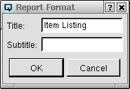
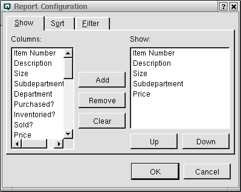
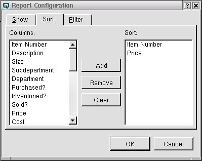
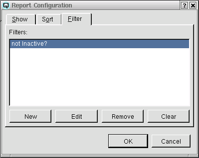
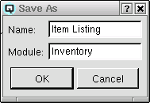

| Table of Contents | Quasar Commands | Up: Reports and Information | Previous: Report List | Next: Balance Sheet |

The report view window provides the ability to preview a report on the screen prior to printing it to a printer. From this window the existing report may be edited or a new report may be created. The main body of the window displays the report.
Click on the refresh button to refresh the data on the screen.
To change the format of a report click on the "Format" button. Currently the format window may be used to change the title and subtitle of a report.
By high-lighting a report in the list and clicking on the "Edit" button you can utilize the "Report Configuration" window to edit the existing report. You may also edit a report by double clicking on the report in the list. Once a report has been edited you may save it under its existing name, or you may save the changes as a new report leaving the existing report in tact.
The reports that you will be configuring will be displayed in vertical columns and horizontal rows. In order to configure a report you will need to:
Accordingly, the report configuration screen has three folders, show, sort and filter.
Note: At any time during your configuration you may click on the "OK" button to view the results of your configuration and then return to the configuration by clicking on the "Configure" button.
Click on the "Show" tab to define what columns of data will be printed on the report.
Adding Columns On the left hand side of the window is a list of columns that can be shown on the report. To add columns of data that will show on a report:
Remove Columns On the right hand side of the report configuration window is a list of columns that will be shown on the report. To remove a column from the show list:
Clear Show List To clear all columns from the show list click on the "Clear" button.
Column Order Columns will display on the report in the order they are listed in the show list. To change the order that a column will be listed on the report:
Click on the "Sort" tab to define what order the rows will be listed on the report.
Adding Columns On the left hand side of the window is a list of columns that can be used to sort the report. To add columns of data that will determine the sort order of a report:
Remove Columns On the right hand side of the report configuration window is a list of columns that will determine the order of the report. To remove a column from the sort list:
Clear Sort List To clear all columns from the sort list click on the "Clear" button.
Sort Hierarchy Sorting is done in a hierarchy. For example, if you sort information from the address book, first by data type and second by name, the report will be sorted by data type first and by name within the respective data types. The order you add columns to the sort list will determine the sort hierarchy.
A report filter filters out data that you do not want to appear on a report, leaving only desired data for viewing. Quasar accounting software has some very special and powerful filter functionality. However, with power, comes a level of complexity. As it is complex please review the Quasar User's Guide for more information.

To save a report that you have configured click on "File" in the top right hand corner of the report view window. Follow by clicking on either "Save" or "Save As". "Save" will save the report over-writing your existing report. If you click on "Save As" the save as window will be displayed.
Enter the name of the report and the module or folder that you wish the report to be stored in. At this point you may create a new module. For example, Joe may set up a module called "Joe". The new module will display with a tab on the report list.
| Table of Contents | Quasar Commands | Up: Reports and Information | Previous: Report List | Next: Balance Sheet |